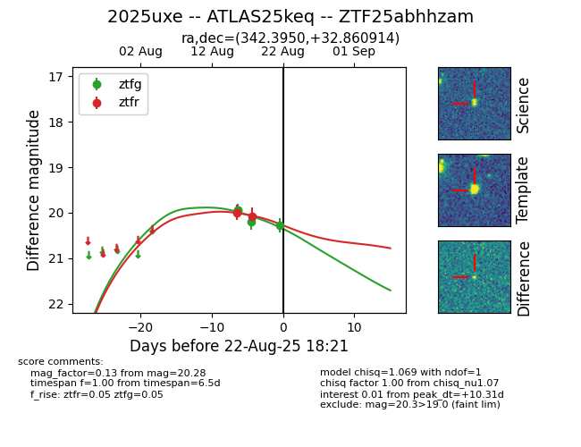

Target 2025uxe at 2025-08-22 18:31, see:
FINK: fink-portal.org/ZTF25abhhzam
Lasair: lasair-ztf.lsst.ac.uk/objects/ZTF25abhhzam
ALeRCE: alerce.online/object/ZTF25abhhzam
TNS: wis-tns.org/object/2025uxe
YSE: ziggy.ucolick.org/yse/transient_detail/2025uxe
alt names
ZTF25abhhzam (ztf,alerce)
2025uxe (tns,yse)
ATLAS25keq (atlas)
coordinates:
equatorial (ra, dec) = (342.3950,+32.86091)
galactic (l, b) = (95.2863,-23.38797)
photometry
last atlaso=20.13, ztfg=20.28, ztfr=20.07
1 atlaso, 4 ztfg, 2 ztfr detections
